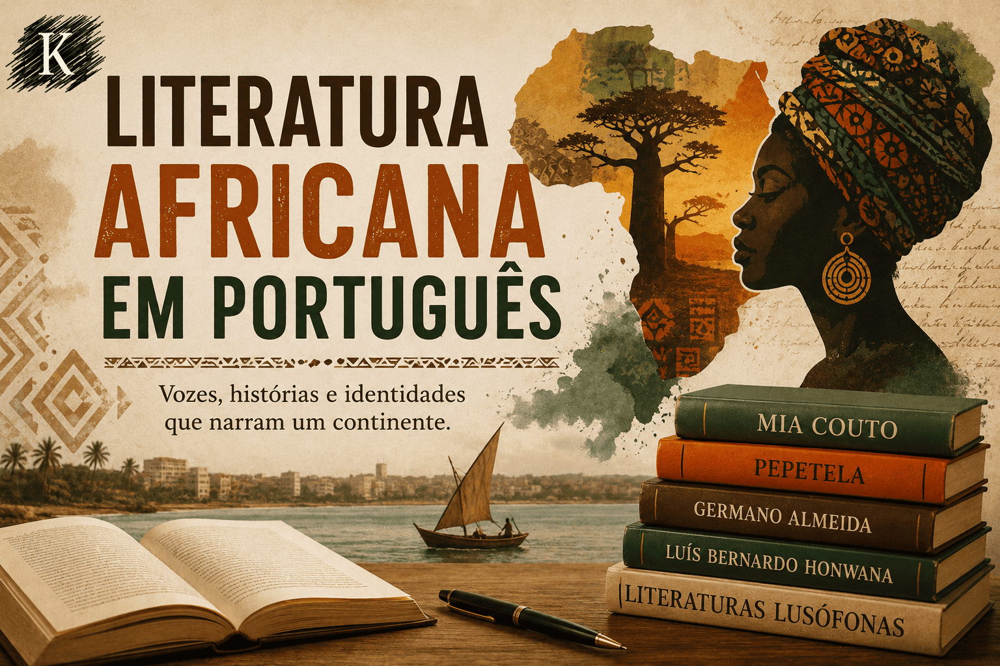

Literatura Africana em Língua Portuguesa: identidade, oralidade e resistência cultural
A Literatura Africana em Língua Portuguesa constitui um importante campo de produção cultural, histórica e estética, marcado pelas experiências da colonização, das lutas de independência, das identidades nacionais e das múltiplas relações entre oralidade e escrita.
Produzida em países como Angola, Moçambique, Cabo Verde, Guiné-Bissau e São Tomé e Príncipe, essa literatura apresenta grande diversidade linguística e cultural, abordando temas como memória, ancestralidade, colonialismo, resistência, identidade cultural e reconstrução social.
Nesta seção do Mestre Kira, você encontrará conteúdos sobre autores africanos lusófonos, diálogos entre literaturas de língua portuguesa, oralidade africana, literatura pós-colonial, identidade cultural e análises de obras fundamentais da literatura africana contemporânea.

O que você encontrará nesta seção
Introdução à literatura africana em língua portuguesa;
Autores clássicos africanos lusófonos;
Literatura angolana e moçambicana;
Oralidade e tradição africana;
Literatura pós-colonial;
Identidade cultural e resistência;
Diálogos entre literaturas lusófonas;
Mia Couto, Pepetela e outros autores;
Literatura infantil e juvenil africana;
Relações entre língua, cultura e sociedade.
Os conteúdos foram organizados para estudantes, vestibulandos, graduandos em Letras, pesquisadores e leitores interessados em compreender a riqueza cultural e estética das literaturas africanas de língua portuguesa.
Publicações sobre Literatura Africana em Língua Portuguesa
Os conteúdos desta seção são produzidos por Leildo Gonçalves, professor de Língua Portuguesa, pesquisador e criador do Mestre Kira, projeto educacional voltado ao ensino de literatura, linguagem, redação e tecnologia aplicada à educação.